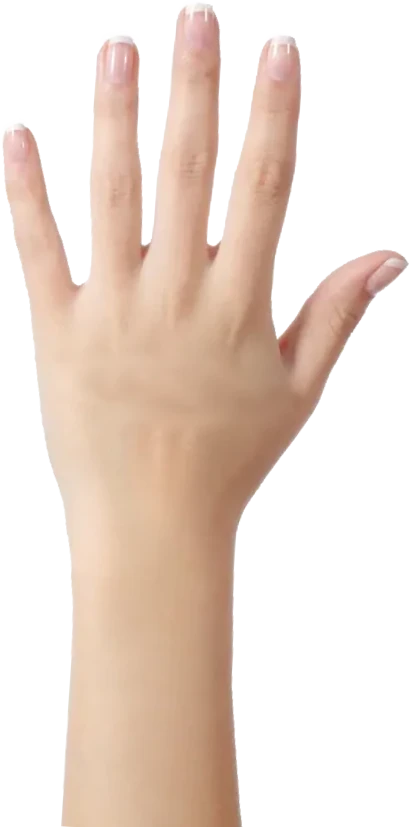

QUICK REFERENCE
Hands first. Voice as backup.
Look + pinchFocus an anchored cue, then pinch to inspect or
select.
Voice commandUse a short command if hand tracking is
unavailable.
Fallback selectionUse dwell or controller fallback where
supported.
Keep controls compact, within a comfortable gaze area, and away from critical real-world surfaces.
WRIST LINK · LOADOUT
Inventory
Items recovered during this run. Keep your attention on the room while checking what you carry.
⌁
Signal trace Evidence · Captured from the console
SECURED
▱
Access shim Tool · Quiet access to narrow seams
READY
CARRY LOAD · 2 / 5
WRIST LINK · PREFERENCES
Settings
Adjust the interface without obscuring your physical surroundings.
Spatial cuesShow nearby objective anchors
Wrist hapticsSubtle feedback on selections
Voice fallbackAllow voice when hands are unavailable
Reduced motionMinimize interface animation
LOCAL PREFERENCES
ROOM//ZERO
BUILD 0.01
ROOM-AWARE OPERATING SYSTEM
THE ROOM IS
THE INTERFACE.
A spatial experience by ROOM//ZERO
INITIALIZING
SPATIAL SYSTEMS00%
ROOM MAPPING
HAND TRACKING
MISSION PROFILE
STAY AWARE OF YOUR REAL SURROUNDINGS
ROOM//ZERO
LIVEROOM MAPPED 100%
Operation 01 / Entry
Objective 01
Find a way into the room without triggering the security sweep.
MISSION SIGNAL01 / 03
OBJECTIVE
ACTIVELOW PROFILE
NEARBY · OBJECTIVE 01
Mission 01
A faint signal is coming from the console. Get
closer and inspect it.
Within reach · Hand
interaction
01
SIGNAL SOURCE
◉ Look at an object · Pinch to inspect
ROOM//ZERO · FIELD
BRIEF
The room is the interface.
Stay aware of your real surroundings. Mission cues attach to mapped
surfaces and nearby objects; no full-screen world replacement.
01 / MOVE
Use your
real room. Keep clear of furniture and walls.
02 / INTERACT
Look,
pinch, or use voice when hands are unavailable.
ROOM CHECK ·
READY
OBJECTIVE 01 · CLOSE
INSPECTION
Console access point
A compact signal relay is hidden behind the console panel. Inspect
the two physical cues before choosing an approach.
Panel
seamOBSERVED
A narrow
gap runs along the lower edge.
Signal
pulseINFERRED
The pulse may
indicate a live sensor.
CHOOSE YOUR APPROACH
Quiet accessUse
the seam; slower, lower risk.
Force the
panelFast, but likely to trigger a
sweep.
INCOMING · LOCAL
CONTACT
“You didn’t get this from me.”
A contact appears at the edge of the mapped room. Their presence is
anchored to a safe, visible area—not directly in your path.
CONTACT / MIRA
“The sweep
follows power spikes. If that relay wakes up, you’ll have
seconds—not minutes.”
YOUR RESPONSE
Trust the
warningFavor a cautious route. The mission may
adapt.
Ask what she is
hidingSeek more context; spend
time.
CHOICE
PERSISTS
SESSION
CONTROL
Pause in place.
The real room remains visible. Pause the mission without moving the
player or replacing passthrough with a virtual scene.
Room
boundary
Mapped · Stay within the clear
area
Session
Progress autosaved at key
choices
SESSION LOG ·
SAVED
Entry, not exposure.
Your decisions have been saved to the session profile. The next run
can respond to the approach you chose.
MISSION RECAP
Quiet access
Approach
selected
Warning accepted
Contact
choice
PROFILE
UPDATED